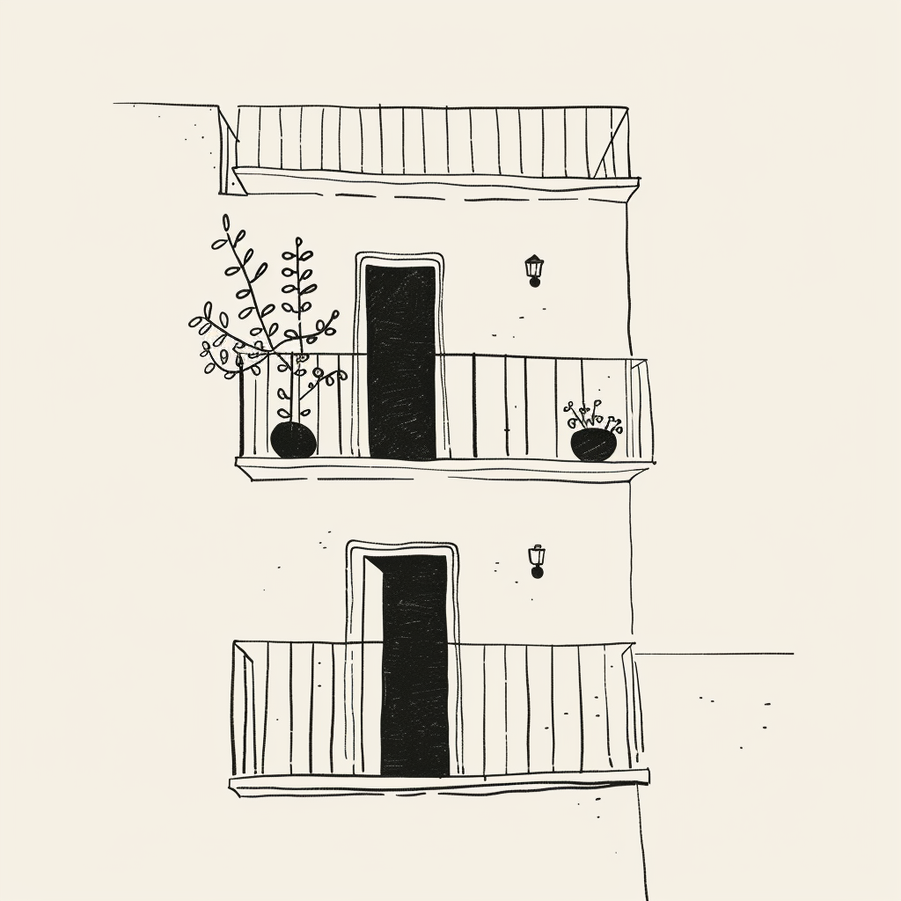
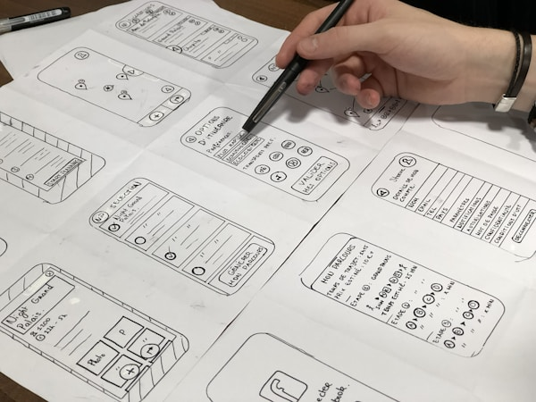

I help small brands look big from day one
Propuesta personalizada para GEM






Hola... GEM
Introducción
Intro
Demos un paso atrás. Comprendamos la singularidad y el potencial real de su propuesta dentro del mercado inmobiliario actual. Porque lo que están construyendo no es solo valioso por su forma, sino por lo que representa: visión a futuro, trayectoria y un compromiso palpable con la calidad y el detalle en todos los frentes.
GEM no nace de la improvisación, sino de una historia familiar que ha sabido adaptarse sin perder esencia. Esa combinación de experiencia con intención, de tradición con estrategia, es poderosa. Después de varios años trabajando con desarrolladores, comercializadoras, fondos y agentes inmobiliarios, puedo decirlo con confianza: son pocos los que, incluso después de ganar reputación, siguen tan comprometidos con el proceso. La mayoría se desvía hacia la rapidez o la repetición. Ustedes, en cambio, construyen con propósito.
Esa visión holística que los caracteriza, ese deseo de mantener el control y entender cada eslabón del proyecto, desde el terreno hasta el producto final, es una fortaleza invaluable.
Permítanme entonces contar su historia. No solo con palabras, sino con una identidad que esté a la altura de su propuesta: historia con raíces, un presente con criterio, y un futuro con dirección. Que su presencia, en forma y fondo, proyecte lo que ya son: referentes y autoridad. Porque cuando una marca está bien construida, no necesita explicarse. El oficio ya se nota. Pongámoslo en papel.
Brief Creativo
GEM (Grupo Empresarial Manzano) es una empresa de construcción y desarrollo inmobiliario con raíces familiares en Venezuela y una sólida trayectoria de 10 años en Houston, Texas. Tras una etapa de reestructuración, GEM se encuentra en un momento crucial, buscando consolidarse como un fondo boutique de proyectos inmobiliarios en los próximos 10 años.
El objetivo principal es atraer inversores privados que buscan oportunidades rentables y seguras en el dinámico mercado inmobiliario de Houston. GEM se encuentra en una fase de transición estratégica, enfocándose en proyectos de inversión inmobiliaria con un enfoque boutique, ofreciendo diseño y concepción de proyectos que se distinguen por su calidad, visión innovadora y atención al detalle. Entiendo que necesitan una presencia en línea y una imagen de marca que reflejen su profesionalismo, experiencia y ambición de convertirse en un fondo de inversión inmobiliario de referencia en los próximos 10 años. Esto incluye una página web profesional, informativa y atractiva que sirva como punto de referencia esencial para inversores y realtors, así como una estrategia de contenido para Instagram y otros posibles medios digitales para construir relaciones sólidas y duraderas en el mercado.
En esta propuesta, he plasmado un plan detallado y personalizado que aborda sus necesidades específicas y captura la esencia de su visión. Desde la creación de una identidad de marca integral y coherente que refleje su herencia y ambiciones futuras, hasta el diseño y desarrollo de una página web a medida con un CMS robusto y fácil de usar para gestionar sus promociones e inmuebles, brindándoles la autonomía necesaria para actualizar o subir nuevos proyectos sin depender constantemente de un diseñador web. También se incluye una estrategia de contenido para Instagram diseñada para atraer a inversores y realtors, mostrando el 'detrás de cámaras' de sus proyectos y estableciéndolos como un recurso confiable y líder en el sector. Además, se han incluido consideraciones para algunos servicios adicionales que podrían potenciar aún más su presencia y comunicación.
Necesidades
- Rebranding Estratégico: GEM necesita una nueva identidad de marca que refleje su visión de futuro, su experiencia en el sector y su ambición de convertirse en un fondo de inversión boutique. Quieren mantener la esencia de su trayectoria anterior, pero con un enfoque fresco y moderno.
- Presencia Web Profesional: Requieren una página web profesional, informativa y atractiva que sirva como punto de referencia para inversores privados y "realtors". Buscan un diseño personalizado, interactivo y con movimiento, que vaya más allá de las plantillas básicas. Necesitan la capacidad de gestionar y actualizar el contenido del sitio de forma autónoma.
- Estrategia de Instagram Impactante: Desarrollar una estrategia de contenido para Instagram que atraiga a inversores y "realtors", mostrando proyectos, el "detrás de cámaras" y estableciendo a GEM como un recurso confiable y líder en el mercado.
- Naming Creativo: Explorar opciones de nombres creativos y memorables, considerando la posibilidad de usar las iniciales JEME o desarrollar una nueva marca que resuene con su visión y valores.
- Comunicación Diferenciada: Crear una comunicación específica y diferenciada para la sección de inversores, enfocándose en la inversión y el rendimiento.
- Enfoque Bilingüe: Necesitan una comunicación bilingüe (inglés y español) en todos los materiales y plataformas.
Puntos Clave
- Público Objetivo: Inversores privados con excedente de capital y "realtors" que conectan con estos inversores.
- Áreas de Enfoque Geográfico: Principalmente Beler y The Heights en Houston, con interés en otras áreas en transición.
- Propuesta de Valor: GEM ofrece proyectos inmobiliarios residenciales y comerciales de alta calidad, con un enfoque boutique y una visión a largo plazo de convertirse en un fondo de inversión líder en Houston.
- Diferenciación: GEM busca diferenciarse por su trayectoria, su enfoque personalizado, su visión innovadora y su compromiso con la calidad y la excelencia en cada proyecto.
Intro
Demos un paso atrás. Comprendamos la singularidad y el potencial real de su propuesta dentro del mercado inmobiliario actual. Porque lo que están construyendo no es solo valioso por su forma, sino por lo que representa: visión a futuro, trayectoria y un compromiso palpable con la calidad y el detalle en todos los frentes.
GEM no nace de la improvisación, sino de una historia familiar que ha sabido adaptarse sin perder esencia. Esa combinación de experiencia con intención, de tradición con estrategia, es poderosa. Después de varios años trabajando con desarrolladores, comercializadoras, fondos y agentes inmobiliarios, puedo decirlo con confianza: son pocos los que, incluso después de ganar reputación, siguen tan comprometidos con el proceso. La mayoría se desvía hacia la rapidez o la repetición. Ustedes, en cambio, construyen con propósito.
Esa visión holística que los caracteriza, ese deseo de mantener el control y entender cada eslabón del proyecto, desde el terreno hasta el producto final, es una fortaleza invaluable.
Permítanme entonces contar su historia. No solo con palabras, sino con una identidad que esté a la altura de su propuesta: historia con raíces, un presente con criterio, y un futuro con dirección. Que su presencia, en forma y fondo, proyecte lo que ya son: referentes y autoridad. Porque cuando una marca está bien construida, no necesita explicarse. El oficio ya se nota. Pongámoslo en papel.
Brief Creativo
GEM (Grupo Empresarial Manzano) es una empresa de construcción y desarrollo inmobiliario con raíces familiares en Venezuela y una sólida trayectoria de 10 años en Houston, Texas. Tras una etapa de reestructuración, GEM se encuentra en un momento crucial, buscando consolidarse como un fondo boutique de proyectos inmobiliarios en los próximos 10 años.
El objetivo principal es atraer inversores privados que buscan oportunidades rentables y seguras en el dinámico mercado inmobiliario de Houston. GEM se encuentra en una fase de transición estratégica, enfocándose en proyectos de inversión inmobiliaria con un enfoque boutique, ofreciendo diseño y concepción de proyectos que se distinguen por su calidad, visión innovadora y atención al detalle. Entiendo que necesitan una presencia en línea y una imagen de marca que reflejen su profesionalismo, experiencia y ambición de convertirse en un fondo de inversión inmobiliario de referencia en los próximos 10 años. Esto incluye una página web profesional, informativa y atractiva que sirva como punto de referencia esencial para inversores y realtors, así como una estrategia de contenido para Instagram y otros posibles medios digitales para construir relaciones sólidas y duraderas en el mercado.
En esta propuesta, he plasmado un plan detallado y personalizado que aborda sus necesidades específicas y captura la esencia de su visión. Desde la creación de una identidad de marca integral y coherente que refleje su herencia y ambiciones futuras, hasta el diseño y desarrollo de una página web a medida con un CMS robusto y fácil de usar para gestionar sus promociones e inmuebles, brindándoles la autonomía necesaria para actualizar o subir nuevos proyectos sin depender constantemente de un diseñador web. También se incluye una estrategia de contenido para Instagram diseñada para atraer a inversores y realtors, mostrando el 'detrás de cámaras' de sus proyectos y estableciéndolos como un recurso confiable y líder en el sector. Además, se han incluido consideraciones para algunos servicios adicionales que podrían potenciar aún más su presencia y comunicación.
Necesidades
- Rebranding Estratégico: GEM necesita una nueva identidad de marca que refleje su visión de futuro, su experiencia en el sector y su ambición de convertirse en un fondo de inversión boutique. Quieren mantener la esencia de su trayectoria anterior, pero con un enfoque fresco y moderno.
- Presencia Web Profesional: Requieren una página web profesional, informativa y atractiva que sirva como punto de referencia para inversores privados y "realtors". Buscan un diseño personalizado, interactivo y con movimiento, que vaya más allá de las plantillas básicas. Necesitan la capacidad de gestionar y actualizar el contenido del sitio de forma autónoma.
- Estrategia de Instagram Impactante: Desarrollar una estrategia de contenido para Instagram que atraiga a inversores y "realtors", mostrando proyectos, el "detrás de cámaras" y estableciendo a GEM como un recurso confiable y líder en el mercado.
- Naming Creativo: Explorar opciones de nombres creativos y memorables, considerando la posibilidad de usar las iniciales JEME o desarrollar una nueva marca que resuene con su visión y valores.
- Comunicación Diferenciada: Crear una comunicación específica y diferenciada para la sección de inversores, enfocándose en la inversión y el rendimiento.
- Enfoque Bilingüe: Necesitan una comunicación bilingüe (inglés y español) en todos los materiales y plataformas.
Puntos Clave
- Público Objetivo: Inversores privados con excedente de capital y "realtors" que conectan con estos inversores.
- Áreas de Enfoque Geográfico: Principalmente Beler y The Heights en Houston, con interés en otras áreas en transición.
- Propuesta de Valor: GEM ofrece proyectos inmobiliarios residenciales y comerciales de alta calidad, con un enfoque boutique y una visión a largo plazo de convertirse en un fondo de inversión líder en Houston.
- Diferenciación: GEM busca diferenciarse por su trayectoria, su enfoque personalizado, su visión innovadora y su compromiso con la calidad y la excelencia en cada proyecto.
¿Y cual es el plan?
¡Aún más sencillo!
Oportunidades
Elevaré tu Marca
Crearé una identidad de marca completa que refleje la visión, los valores y la trayectoria de GEM. Desde el naming y el logotipo hasta la paleta de colores y el Brandbook, construiremos juntos una marca auténtica y memorable que conecta con inversores y realtors.
Presencia Digital a Medida
Desarrollaré un sitio web profesional y atractivo en Webflow, diseñado específicamente para GEM. Con CMS intuitivo, diseño interactivo, optimización SEO y funcionalidades personalizadas (mapa interactivo, sección para inversores), crearé una experiencia digital que impulse su negocio.
Conecten con su Audiencia en Instagram
Desarrollaré una estrategia de contenido para Instagram que establezca su marca como un referente confiable. Diseñaré plantillas personalizadas y planificaré el primer mes de su presencia en redes sociales para maximizar el alcance y el engagement.
Soluciones Integrales para su Marca
Además de branding, diseño web y redes sociales, ofrezco una variedad de servicios adicionales para complementar su estrategia de marca y comunicación. Desde producción de video y retoque fotográfico hasta diseño de papelería y mantenimiento web, tengo todo lo que necesitan para destacar.
¿Por qué Milky Branding es lo que necesitan?
Tu marca es más que solo un logotipo o un lema pegajoso; es el corazón y alma de tu negocio. Milky Branding está diseñado para ayudarte a crear una impresión duradera en tu audiencia, fomentar la confianza y destacarte en un mercado competitivo. Esto es lo que mi servicio de branding puede ofrecerte:
Implementación Técnica: Para abordar los desafíos técnicos como la escalabilidad, legibilidad y adaptabilidad del logotipo de GEM, emplearé técnicas avanzadas de diseño gráfico que aseguren su eficacia en una amplia variedad de aplicaciones. La escalabilidad es crucial, permitiendo que el logotipo mantenga su impacto visual tanto en grandes formatos, como vallas publicitarias, como en aplicaciones mucho más pequeñas, como favicons en sitios web. Esto se logra a través de un diseño simplificado que evita detalles excesivamente finos que pueden perderse al reducirse. La legibilidad, por otro lado, se asegura mediante el uso de tipografías claras y espacios adecuados dentro del diseño del logotipo, garantizando que sea fácilmente reconocible a cualquier tamaño. Finalmente, la adaptabilidad implica diseñar el logotipo de modo que se vea óptimo en diversos fondos y contextos sin perder su identidad, lo cual es vital para una marca que desea mantener una presencia coherente en diferentes medios y plataformas.
Una Identidad Única
Me involucraré personalmente en cada paso del proceso de creación de su marca. Desde seleccionar la paleta de colores hasta definir la tipografía que mejor hable de GEM, cada detalle será escogido para capturar la esencia de su visión y los valores que representa.
Imágenes Memorables
Diseñaré un logotipo y materiales de marca que no solo capten la atención de tu público, sino que también se queden en su memoria. Quiero que, al ver su marca, sus clientes sientan la calidad y el carácter único de su negocio.
Mensajes Persuasivos
Redactaré textos que no solo informen, sino que también emocionen y motiven. La narrativa de tu marca girará alrededor de historias cautivadoras que resalten la autenticidad y la tradición detrás de todo lo que ofrecen con una voz única!.
Recursos Gráficos
Para enriquecer la identidad visual de GEM, desarrollaré una serie de recursos complementarios que ayudarán a reforzar la marca. Esto incluirá la posible creación de ilustraciones, patrones, gradientes, iconografías, entre otros activos de marca de gran utilidad.
Naming Estratégico
Exploraré y desarrollaré un nombre que no solo sea memorable, con buena fonética y fácil de pronunciar, sino que también refleje la visión y los valores de la marca. Realizaré una investigación exhaustiva para asegurar que el nombre esté disponible como dominio web y en redes sociales, y que no suene genérico ni se confunda con otras empresas del sector.
Consistencia de Marca
La coherencia es clave para establecer confianza y reconocimiento. Aseguraré que cada elemento de tu branding, desde el sitio web hasta los materiales promocionales, refleje una imagen unificada y profesional. El Brandbook que desarrollaré será una guía completa, permitiéndote gestionar y aplicar tu identidad de marca con total independencia.
Ventaja Competitiva
En un mercado tan saturado, una marca sólida y bien posicionada es crucial. Con Milky Branding, no solo construiremos una marca; crearemos una experiencia que resuene con tus clientes y los haga volver una y otra vez. Esto no solo aumenta tu visibilidad, sino que también fortalece la lealtad del cliente y posiciona a GEM como una referencia en el sector.
Let's Elevate Your Brand
Shakefront
Webflow
Development

¿Por qué la creación de su sitio web con Webflow es lo que necesitan?
Tu sitio web es más que solo una dirección en línea o una interfaz bonita; tu tarjeta de presentación online. La creación de sitios web en Webflow está diseñada para capturar la esencia de tu negocio y transformarla en una experiencia digital que no solo impresione, sino que también convierta.
Una presencia online que realmente representa tu marca
Una presencia online que realmente representa tu marca: En el mundo digital de hoy, tener un sitio web que auténticamente refleje los valores y la estética de tu marca es crucial. Webflow te permite ir más allá de las plantillas genéricas y crear una experiencia única que hable directamente a tu audiencia. Con herramientas avanzadas de diseño y desarrollo, Webflow empodera a los creadores para que implementen cada detalle con precisión, asegurando que cada pixel refleje tu visión de marca.
Interactividad que cautiva
No se trata solo de cómo se ve tu sitio, sino de cómo se siente interactuar con él. Webflow ofrece capacidades avanzadas de interacción y animación que pueden hacer que tu sitio cobre vida. Desde microinteracciones que deleitan hasta animaciones complejas que cuentan tu historia, puedes crear un sitio dinámico que mantenga a los usuarios comprometidos y les incentive a volver.
Gestión de contenido simplificada
Actualizar tu sitio web no debería ser una tarea complicada. Con el CMS integrado de Webflow, gestionar tu contenido es tan intuitivo como poderoso. Ya sea que estés publicando un nuevo proyecto o un nuevo artículo para el blog, actualizando portafolios, o añadiendo testimonios de clientes, Webflow hace que el proceso sea fácil y accesible, incluso para los usuarios menos técnicos.
Optimización y rendimiento
Un sitio web debe ser tan ágil como hermoso. Webflow asegura que tu sitio no solo luzca bien, sino que también cargue rápidamente y funcione sin problemas en cualquier dispositivo. La optimización incorporada garantiza que cumplas con los estándares de SEO y mejores tu visibilidad online, mientras que las prácticas de diseño responsivo aseguran que todos los visitantes tengan una experiencia óptima.
Soporte y seguridad de primera
Con Webflow, no estás solo en tu viaje digital. Te beneficias de una plataforma segura con hospedaje de primera y un equipo de soporte listo para ayudarte con cualquier pregunta o problema. Desde la seguridad hasta la resolución de problemas, puedes confiar en que Webflow te respalda en cada paso del camino.
Conclusión
En conclusión, elegir Webflow para desarrollar tu sitio web significa elegir una herramienta que extiende el alcance de tu marca en el mundo digital, proporcionando una plataforma robusta, flexible y dinámica para contar la historia de tu empresa. Es la elección ideal para aquellos que buscan crear una presencia online inolvidable y efectiva.
Nuestros objetivos son claros, pero ahora hablemos de los pasos a seguir:
Un poco sobre mi metodología en diseño Web
Load: Planificación Previa
Antes de sumergirnos en el diseño y desarrollo, es crucial establecer una base sólida y estratégica para asegurar que el proyecto de GEM sea un éxito rotundo desde el inicio. En esta fase de Planificación Previa, nos enfocaremos en alinear los objetivos, el propósito y el mensaje único de GEM, así como en definir estilos funcionales que transmitan su visión y valores de la manera más efectiva. Esta fase es fundamental para garantizar que estemos completamente preparados y alineados con sus expectativas y ambiciones, permitiendo que el resto del proceso fluya de manera eficiente y autónoma.
Pasos y Tareas Específicas para GEM:
- Investigación Exhaustiva del Mercado Inmobiliario de Houston: Realizaremos una investigación detallada de las tendencias de diseño y las mejores prácticas en proyectos inmobiliarios similares, tanto a nivel local en Houston como en mercados internacionales de referencia. Esto nos permitirá identificar oportunidades y diferenciadores clave para GEM.
- Creación de un Moodboard Personalizado para GEM: Desarrollaremos un moodboard a medida, seleccionando referencias de estilo, diseño y tonalidad que reflejen la identidad y la visión de GEM. Este moodboard servirá como guía visual durante todo el proyecto.
- Diseño Estratégico de Atributos y Estilos Únicos para GEM: Definiremos atributos y estilos únicos para los elementos a desarrollar (logotipo, sitio web, redes sociales, etc.), asegurando que cada pieza transmita la esencia de GEM.
- Uso de Herramientas de Colaboración Eficaz: Utilizaremos herramientas como Miro, Slack y Asana para mantener una comunicación fluida y una colaboración eficiente con el equipo de GEM durante todo el proceso.
- Alineación de Estructura, Propósito y Mensaje de GEM: Trabajaremos en conjunto para alinear la estructura, el propósito y el mensaje de GEM, asegurando que la fase de diseño y desarrollo sea lo más clara y directa posible. Nos centraremos en cómo comunicar su historia familiar, su trayectoria en Houston y su visión de futuro como fondo de inversión.
- Análisis Competitivo en el Mercado Inmobiliario de Houston: Realizaremos un análisis exhaustivo de la industria inmobiliaria en Houston y analizaremos a la competencia para identificar fortalezas, debilidades y oportunidades que permitan a GEM destacarse y diferenciarse de manera efectiva.
Aim: Diseño y Estructura
En esta fase crucial, nos sumergiremos en la creación visual y estructural del proyecto de GEM. Nos enfocaremos en todos los aspectos relacionados con el diseño y la arquitectura de su presencia digital, asegurando que refleje fielmente su identidad y transmita su mensaje de manera efectiva a inversores y realtors. Seleccionaremos cuidadosamente los estilos, colores y acabados gráficos, incluyendo texturas, degradados y otros efectos que resalten la sofisticación y la calidad de los proyectos de GEM. También definiremos elementos complementarios que fortalezcan la identidad visual y la coherencia de la marca.
Trabajaremos en estrecha colaboración con el equipo de GEM para diseñar de manera inteligente, teniendo en cuenta sus preferencias, las posibilidades técnicas y los plazos del proyecto. Realizaremos pruebas y estudios de referencia para asegurar que el diseño final sea de alta calidad, funcional y alineado con las expectativas.
Pasos y Tareas Específicas para GEM:
- Diseño y Conceptualización Basados en la Investigación Previa: Crearemos diseños y conceptos visuales basados en el análisis del mercado inmobiliario de Houston y la investigación realizada en la fase de planificación. Nos aseguraremos de que los diseños reflejen la visión de GEM como fondo boutique de inversión.
- Refinamiento y Mejora Detallada: Refinaremos y mejoraremos los diseños, prestando especial atención a los detalles, las proporciones y el equilibrio visual. Cada elemento será cuidadosamente trabajado para transmitir la calidad y la atención al detalle que caracterizan a GEM.
- Organización Estructurada y Nomenclatura Clara: Organizaremos los elementos de manera estructurada y coherente, utilizando convenciones de nomenclatura adecuadas para facilitar la edición y actualización futura del sitio web y otros materiales.
- Colaboración Continua con el Equipo de GEM: Mantendremos una comunicación constante y transparente con el equipo de GEM para asegurar que los diseños se alineen perfectamente con su visión y objetivos. Sus comentarios y retroalimentación serán fundamentales en cada etapa del proceso.
- Pruebas y Ajustes para Optimizar la Experiencia Visual: Realizaremos pruebas exhaustivas y ajustes necesarios para optimizar la legibilidad, la navegación y la experiencia visual del contenido. Nos aseguraremos de que el sitio web sea intuitivo y atractivo para inversores y realtors.
- Creación de un Wireframe Interactivo y Funcional: Antes de comenzar el desarrollo en línea, crearemos un wireframe local interactivo y funcional. Esto permitirá visualizar y probar la experiencia del usuario, garantizando que sea fluida y efectiva.
Shoot [1]: Exportación y uso
En esta etapa final, pero crucial, de "Shoot," nos enfocaremos en la exportación y preparación meticulosa de todos los elementos del proyecto de GEM para su implementación efectiva en diversas plataformas y canales de comunicación, incluyendo el desarrollo web en caso de ser contratado. Nos aseguraremos de que cada activo esté listo, optimizado y cumpla con los más altos estándares de calidad y consistencia visual, garantizando que GEM cause una impresión duradera en inversores y realtors.Esta fase es esencial para que GEM pueda utilizar sus nuevos activos de marca de manera autónoma y efectiva, ya sea por su propio equipo o por cualquier otra agencia o profesional que colabore en el futuro. Nos comprometemos a entregar un paquete completo y organizado, listo para impulsar la presencia digital y la comunicación de GEM.
Pasos y Tareas Específicas para GEM (Branding y Elementos Gráficos):
- Exportación en Formatos Óptimos: Exportaremos los diseños y elementos gráficos en los formatos adecuados para su implementación en diversas plataformas, como PNG, JPEG o SVG, considerando los requisitos técnicos y de resolución específicos de las plataformas digitales, redes sociales y medios convencionales que GEM utilizará.
- Control de Calidad Riguroso: Verificaremos meticulosamente la calidad de todas las imágenes y recursos gráficos, asegurándonos de que estén nítidos, sin distorsiones ni pixelaciones, y que reflejen la profesionalidad y la atención al detalle de GEM.
- Aseguramiento de la Coherencia de Marca: Nos aseguraremos de que todos los elementos exportados cumplan estrictamente con los estándares de la marca GEM y se ajusten a las guías de estilo establecidas en el Brandbook. Esto garantizará una imagen de marca unificada y consistente en todos los puntos de contacto.
- Revisión Exhaustiva de Textos e Información: Revisaremos minuciosamente toda la información y los textos para garantizar la precisión, la ortografía impecable y la coherencia del mensaje. Nos aseguraremos de que el copywriting refleje la voz y los valores de GEM de manera efectiva.
- Organización y Etiquetado Metódico: Organizaremos y etiquetaremos todos los archivos de manera clara y ordenada en Google Drive, facilitando su acceso, gestión y uso posterior por parte del equipo de GEM o terceros.
- Creación de un Brandbook Detallado y Personalizado: Entregaremos un Brandbook completo y detallado, que servirá como guía de referencia para la utilización correcta de la marca GEM. Este documento incluirá guías de estilo, valores de marca, voz y tono, y ejemplos prácticos de aplicación en diferentes contextos.
Shoot [2]: Implementación y desarrollo
En la fase final de "Shoot," transformaremos la visión de GEM en una realidad digital tangible. Tomando en cuenta toda la información recopilada, los recursos de marca diseñados y el wireframe interactivo, nos dedicaremos a construir y desarrollar el sitio web de GEM en Webflow, con una atención meticulosa a los detalles y a la experiencia del usuario.Nuestro objetivo es crear una plataforma web que no solo sea visualmente atractiva, sino también funcional, intuitiva y optimizada para atraer y convertir a inversores y realtors. Nos aseguraremos de que el sitio web refleje la profesionalidad, la calidad y la visión de futuro de GEM.
Pasos y Tareas Específicas para GEM (Diseño Web y Desarrollo):
- Creación del Sitio Web en Webflow Basada en el Diseño Aprobado: Desarrollaremos el sitio web de GEM en Webflow, siguiendo fielmente el diseño previamente aprobado y el wireframe interactivo.
- Desarrollo Detallado de Cada Página y Sección: Construiremos cada página y sección del sitio web, prestando atención a la estructura, el contenido y la presentación visual, asegurando la coherencia con la identidad de marca de GEM.
- Custom Coding para Consistencia Visual y Alineación con la Marca: Utilizaremos custom coding para lograr una consistencia visual impecable y asegurar que el sitio web se alinee perfectamente con los lineamientos de la marca GEM, incluyendo tipografía, paleta de colores y elementos gráficos.
- Implementación de la Estructura de Navegación y Links Internos: Estableceremos una estructura de navegación clara e intuitiva, con links internos optimizados para facilitar la exploración del sitio web por parte de los usuarios y mejorar el SEO.
- Integración de Funcionalidades Específicas para GEM: Implementaremos funcionalidades específicas requeridas por GEM, como formularios de contacto para inversores, integración con mapas interactivos de proyectos, secciones dedicadas a la inversión y cualquier otro widget o herramienta necesaria.
- Ajuste y Optimización de la Velocidad de Carga: Optimizaremos la velocidad de carga del sitio web para garantizar una experiencia de usuario fluida y eficiente en todos los dispositivos.
- Integración de Herramientas de Análisis y Seguimiento: Integraremos herramientas de análisis y seguimiento como Google Analytics (si es necesario) para que GEM pueda monitorear el tráfico del sitio web y el comportamiento de los usuarios.
- Diseño 100% Adaptativo y Pruebas Rigurosas: Aseguraremos un diseño 100% adaptativo que ofrezca una experiencia óptima en diferentes dimensiones, dispositivos, navegadores y sistemas operativos. Realizaremos pruebas exhaustivas antes de la publicación para garantizar la funcionalidad y la compatibilidad.
- Prueba de Rendimiento, Verificación de Funciones y Resolución de Errores: Realizaremos pruebas de rendimiento, verificación de funciones y resolución de errores para asegurar que el sitio web funcione sin problemas y cumpla con los más altos estándares de calidad.
- Revisión Final Completa y Configuración de Redirecciones: Llevaremos a cabo una revisión final completa del sitio web y configuraremos las redirecciones necesarias para garantizar una transición fluida desde cualquier sitio web anterior.
- Optimización de Contenido, Código y Medios: Optimizaremos el contenido, el código y los medios (imágenes y videos) para mejorar el SEO y el rendimiento general del sitio web.
- Lanzamiento Oficial del Sitio en Línea: Realizaremos el lanzamiento oficial del sitio web en línea, asegurando una transición sin problemas y una puesta en marcha exitosa.
- Capacitación sobre el "Editor Dashboard" de Webflow: Proporcionaremos una capacitación completa sobre el "Editor Dashboard" de Webflow para que el equipo de GEM pueda modificar y actualizar el sitio web de manera autónoma y eficiente.
Más Soluciones Integrales para tu Marca
Conecten con su Audiencia en Instagram
Desarrollaré una estrategia de contenido para Instagram que establezca su marca como un referente confiable. Diseñaré plantillas personalizadas y planificaré el primer mes de su presencia en redes sociales para maximizar el alcance y el engagement.
Cuenten tu Historia con un Brand Video poderoso
Crearé un video de marca que capture la esencia de GEM, mostrando sus proyectos, su equipo y su visión. Desde motion graphics hasta live action, produciré contenido audiovisual de alta calidad que atraiga, informe y conecte con su público objetivo.
Materialicen su Marca
Diseñaré papelería corporativa, flyers, brochures y otros materiales de marketing que complementen su identidad visual y refuercen su marca. Cada pieza será creada con atención al detalle y un enfoque en la calidad y la coherencia.
Imágenes para contar su Historia
Mejoraré y optimizaré tus fotografías para resaltar la belleza y la calidad de sus proyectos inmobiliarios. Con técnicas de retoque avanzadas, editaré imágenes "on brand" que atraigan la atención y transmitan la excelencia de GEM.
Mantenimiento Web Sin Preocupaciones
Ofreceré servicios de mantenimiento web mensual para asegurar que su sitio en Webflow funcione sin problemas. Incluye actualizaciones de contenido, soporte técnico, optimización y seguridad, para que puedan enfocarse en su negocio.
Precios y Desglose
Mi propuesta con ❤️ para ustedes
Detalle y Contrato